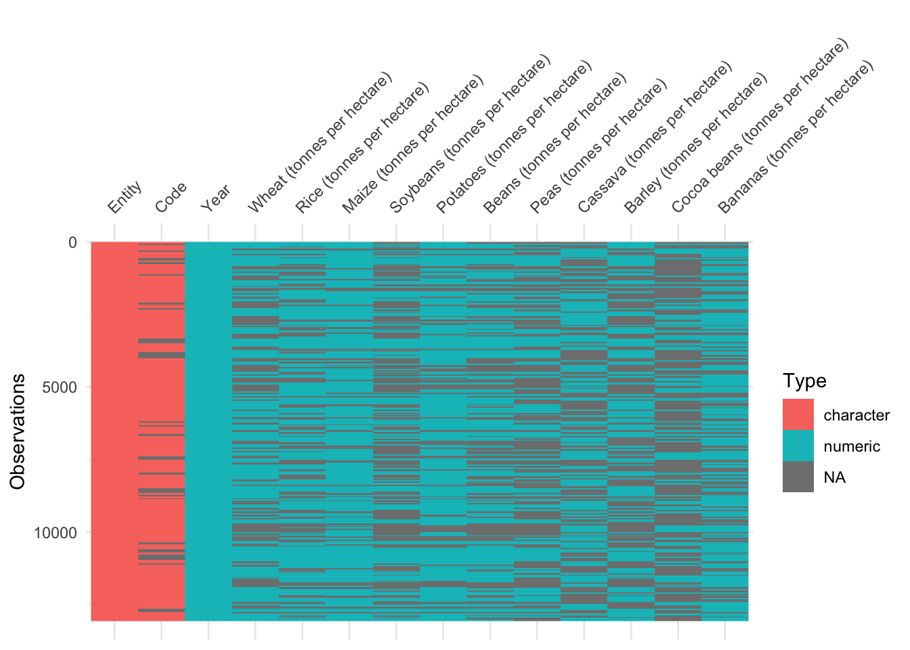
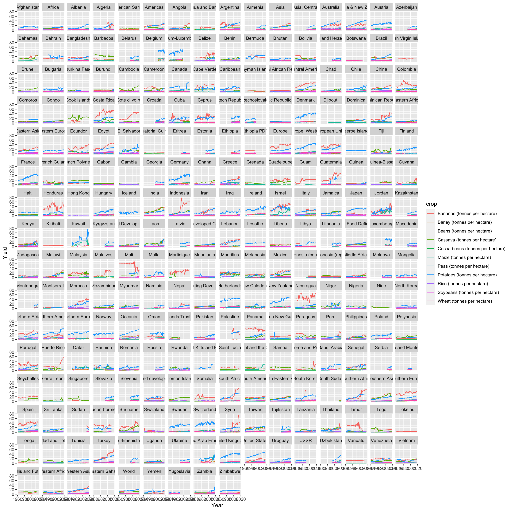
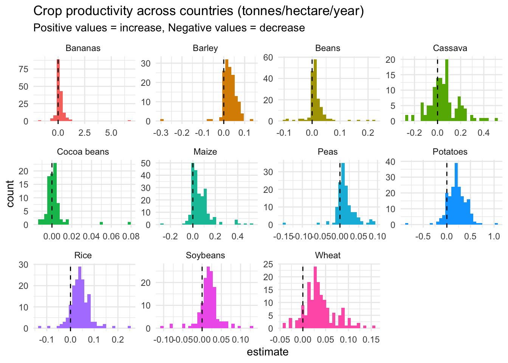

library(tidytuesdayR)
#This will open up in the help window
tidytuesdayR::tt_available()Look at the available datasets
What was your dataset?
Load your dataset in with the function below. The input is the date the dataset was issued. You should be able to get this from the tt_available() function.
#incoming data comes in as a list
datasets <- tidytuesdayR::tt_load("2020-09-01")--- Compiling #TidyTuesday Information for 2020-09-01 ------- There are 5 files available ------ Starting Download ---
Downloading file 1 of 5: `arable_land_pin.csv`
Downloading file 2 of 5: `cereal_crop_yield_vs_fertilizer_application.csv`
Downloading file 3 of 5: `cereal_yields_vs_tractor_inputs_in_agriculture.csv`
Downloading file 4 of 5: `key_crop_yields.csv`
Downloading file 5 of 5: `land_use_vs_yield_change_in_cereal_production.csv`--- Download complete ---#show the names of the individual datasets
names(datasets)[1] "arable_land_pin"
[2] "cereal_crop_yield_vs_fertilizer_application"
[3] "cereal_yields_vs_tractor_inputs_in_agriculture"
[4] "key_crop_yields"
[5] "land_use_vs_yield_change_in_cereal_production" Key Crop Yields
key_crop_yields <- datasets$key_crop_yieldsVisdat
visdat::vis_dat(key_crop_yields)
Skimr
skimr::skim(key_crop_yields)| Name | key_crop_yields |
| Number of rows | 13075 |
| Number of columns | 14 |
| _______________________ | |
| Column type frequency: | |
| character | 2 |
| numeric | 12 |
| ________________________ | |
| Group variables | None |
Variable type: character
| skim_variable | n_missing | complete_rate | min | max | empty | n_unique | whitespace |
|---|---|---|---|---|---|---|---|
| Entity | 0 | 1.00 | 4 | 39 | 0 | 249 | 0 |
| Code | 1919 | 0.85 | 3 | 8 | 0 | 214 | 0 |
Variable type: numeric
| skim_variable | n_missing | complete_rate | mean | sd | p0 | p25 | p50 | p75 | p100 | hist |
|---|---|---|---|---|---|---|---|---|---|---|
| Year | 0 | 1.00 | 1990.37 | 16.73 | 1961.00 | 1976.00 | 1991.00 | 2005.00 | 2018.00 | ▇▆▇▇▇ |
| Wheat (tonnes per hectare) | 4974 | 0.62 | 2.43 | 1.69 | 0.00 | 1.23 | 1.99 | 3.12 | 10.67 | ▇▅▂▁▁ |
| Rice (tonnes per hectare) | 4604 | 0.65 | 3.16 | 1.85 | 0.20 | 1.77 | 2.74 | 4.16 | 10.68 | ▇▇▃▁▁ |
| Maize (tonnes per hectare) | 2301 | 0.82 | 3.02 | 3.13 | 0.03 | 1.14 | 1.83 | 3.92 | 36.76 | ▇▁▁▁▁ |
| Soybeans (tonnes per hectare) | 7114 | 0.46 | 1.45 | 0.75 | 0.00 | 0.86 | 1.33 | 1.90 | 5.95 | ▇▇▂▁▁ |
| Potatoes (tonnes per hectare) | 3059 | 0.77 | 15.40 | 9.29 | 0.84 | 8.64 | 13.41 | 20.05 | 75.30 | ▇▅▁▁▁ |
| Beans (tonnes per hectare) | 5066 | 0.61 | 1.09 | 0.82 | 0.03 | 0.59 | 0.83 | 1.35 | 9.18 | ▇▁▁▁▁ |
| Peas (tonnes per hectare) | 6840 | 0.48 | 1.48 | 1.01 | 0.04 | 0.72 | 1.15 | 1.99 | 7.16 | ▇▃▁▁▁ |
| Cassava (tonnes per hectare) | 5887 | 0.55 | 9.34 | 5.11 | 1.00 | 5.55 | 8.67 | 11.99 | 38.58 | ▇▇▁▁▁ |
| Barley (tonnes per hectare) | 6342 | 0.51 | 2.23 | 1.50 | 0.09 | 1.05 | 1.88 | 3.02 | 9.15 | ▇▆▂▁▁ |
| Cocoa beans (tonnes per hectare) | 8466 | 0.35 | 0.39 | 0.28 | 0.00 | 0.24 | 0.36 | 0.49 | 3.43 | ▇▁▁▁▁ |
| Bananas (tonnes per hectare) | 4166 | 0.68 | 15.20 | 12.08 | 0.66 | 5.94 | 11.78 | 20.79 | 77.59 | ▇▃▁▁▁ |
What was your question?
Given your inital exploration of the data, what was the question you wanted to answer?
How have key crop yields changed over time?
What were your findings?
Put your findings and your visualization code here.
key_crop_yields %>%
tidyr::pivot_longer(cols = contains("(tonnes"), names_to="crop",
values_to="Yield") %>%
ggplot() + aes(x=Year, y= Yield, group=crop, color=crop) + geom_line() + facet_wrap(~Entity)Warning: Removed 669 row(s) containing missing values (geom_path).
Let’s try and estimate whether a country is increasing its yield or decreaing its yield over time. I’ll use lm() to run a linear regression on each entity in the data, and use broom::tidy() to pull out the estimates of the slopes.
model_results <- key_crop_yields %>%
tidyr::pivot_longer(cols = contains("(tonnes"), names_to="crop",
values_to="Yield") %>%
mutate(crop=str_replace(crop,"\\(tonnes per hectare\\)", "")) %>%
tidyr::drop_na(Yield) %>%
nest_by(Entity, crop) %>%
mutate(num_points = nrow(data)) %>%
mutate(model=list(lm(Yield ~ Year, data=data))) %>%
summarize(num_points, broom::tidy(model)) %>%
filter(term == "Year") %>%
arrange(Entity, desc(estimate))Warning in summary.lm(x): essentially perfect fit: summary may be unreliable
Warning in summary.lm(x): essentially perfect fit: summary may be unreliable`summarise()` has grouped output by 'Entity', 'crop'. You can override using the
`.groups` argument.model_results# A tibble: 1,691 × 8
# Groups: Entity, crop [1,691]
Entity crop num_points term estimate std.error statistic p.value
<chr> <chr> <int> <chr> <dbl> <dbl> <dbl> <dbl>
1 Afghanistan "Potatoes… 58 Year 0.102 0.0197 5.15 3.45e- 6
2 Afghanistan "Rice " 58 Year 0.0238 0.00253 9.40 4.10e-13
3 Afghanistan "Wheat " 58 Year 0.0169 0.00199 8.52 1.10e-11
4 Afghanistan "Maize " 58 Year 0.00987 0.00272 3.63 6.23e- 4
5 Afghanistan "Barley " 58 Year 0.00711 0.00198 3.60 6.73e- 4
6 Africa "Potatoes… 58 Year 0.121 0.00630 19.1 3.20e-26
7 Africa "Cassava " 58 Year 0.0742 0.00305 24.4 1.79e-31
8 Africa "Bananas " 58 Year 0.0724 0.00653 11.1 9.80e-16
9 Africa "Wheat " 58 Year 0.0369 0.00123 30.0 3.39e-36
10 Africa "Soybeans… 58 Year 0.0172 0.000931 18.4 1.89e-25
# … with 1,681 more rowsLooking at the United States, there are mostly increases in crop yield.
model_results %>%
filter(Entity == "United States") # A tibble: 9 × 8
# Groups: Entity, crop [9]
Entity crop num_points term estimate std.error statistic p.value
<chr> <chr> <int> <chr> <dbl> <dbl> <dbl> <dbl>
1 United States "Potatoe… 58 Year 0.497 0.00795 62.6 1.61e-53
2 United States "Bananas… 58 Year 0.215 0.0207 10.4 1.28e-14
3 United States "Maize " 58 Year 0.121 0.00554 21.8 5.14e-29
4 United States "Rice " 58 Year 0.0770 0.00239 32.2 7.44e-38
5 United States "Barley " 58 Year 0.0355 0.00169 21.0 2.93e-28
6 United States "Soybean… 58 Year 0.0295 0.00138 21.5 1.07e-28
7 United States "Wheat " 58 Year 0.0256 0.00129 19.8 5.68e-27
8 United States "Beans " 58 Year 0.0126 0.000812 15.6 5.11e-22
9 United States "Peas " 58 Year 0.00902 0.00375 2.40 1.96e- 2We can rank the top producers by crop:
ranked_by_slope <- model_results %>%
ungroup() %>%
group_by(crop) %>%
summarize(Entity, crop, num_points, estimate=signif(estimate, digits = 3), rank = row_number(desc(estimate))) %>%
arrange(crop, rank)`summarise()` has grouped output by 'crop'. You can override using the `.groups`
argument.ranked_by_slope# A tibble: 1,691 × 5
# Groups: crop [11]
crop Entity num_points estimate rank
<chr> <chr> <int> <dbl> <int>
1 "Bananas " South Korea 6 6.56 1
2 "Bananas " Indonesia 58 1.27 2
3 "Bananas " Peru 14 1.25 3
4 "Bananas " Syria 49 1.01 4
5 "Bananas " South Africa 58 0.947 5
6 "Bananas " Turkey 58 0.839 6
7 "Bananas " Southern Africa 58 0.835 7
8 "Bananas " Cote d'Ivoire 58 0.749 8
9 "Bananas " Guatemala 58 0.723 9
10 "Bananas " Morocco 40 0.654 10
# … with 1,681 more rowsFinally, let’s do histograms by crop:
ranked_by_slope %>%
ggplot() +
aes(x=estimate, fill=crop) +
geom_histogram() +
geom_vline(xintercept = 0, lty =2) +
labs(title = "Crop productivity across countries (tonnes/hectare/year)",
subtitle = "Positive values = increase, Negative values = decrease") +
theme_minimal() +
theme(legend.position = "none") +
facet_wrap(~crop, scales = "free")`stat_bin()` using `bins = 30`. Pick better value with `binwidth`.Warning: Removed 3 rows containing non-finite values (stat_bin).
What did you learn?
Were there any lessons you learned? Any cool packages you want to talk about?
Citation
BibTeX citation:
@online{laderas2020,
author = {Ted Laderas and Ted Laderas},
title = {Tidy {Tuesday:} {Crop} {Production}},
date = {2020-09-03},
url = {https://laderast.github.io//articles/2020-9-3_crops},
langid = {en}
}
For attribution, please cite this work as:
Ted Laderas, and Ted Laderas. 2020. “Tidy Tuesday: Crop
Production.” September 3, 2020. https://laderast.github.io//articles/2020-9-3_crops.